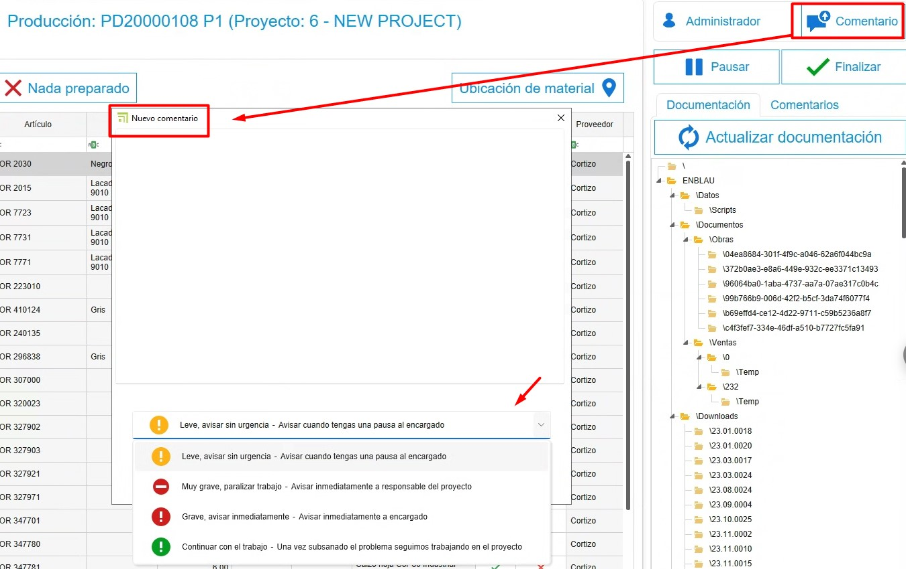
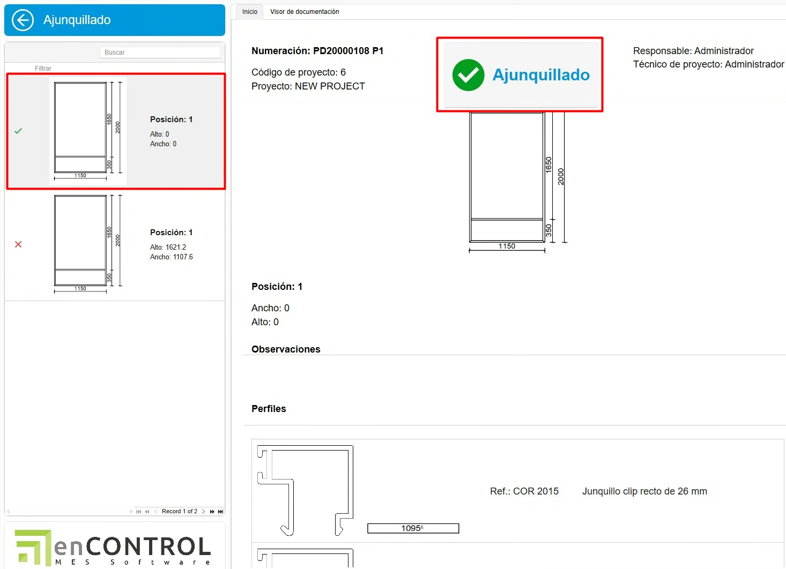

Sistema de controle de estoque enCONTROL
1. Propósito
Este manual foi elaborado para novos usuários do sistema de controle de estoque utilizado pelos Clientes e Endades. O principal objetivo é fornecer um guia detalhado para a gestão eficiente de projetos, desde a criação de pedidos até a otimização do processo de produção no enCONTROL e enSITE. Este documento cobre os passos necessários para realizar as operações chave do sistema e está estruturado de forma sequencial para facilitar a compreensão.
2. Recepção de materiais
2.1. Recepção no enSITE
- Uma vez criado o pedido de compra, no ENBLAU em Armazéns, acesse a opção "Pendentes de Receber" na seção de Armazéns. Será aberta uma aba com todos os materiais pendentes de recebimento para cada projeto.


Nota: Para informações mais detalhadas sobre pedidos de compra, siga este link: 2.1. Pedidos de compra
- Modo de recepção: Abra o enSite a partir da oficina via Wi-Fi com a pessoa responsável pelo recebimento do pedido.
- Em Recepção de pedidos, localize o pedido correspondente (ordenado por data).


- Registre a recepção em Novo Alvará, criando um alvará na seção Armazém.


- No ENBLAU, a aba Pendente de receber em Armazéns se sincroniza e você não verá mais os materiais desse pedido.
- No Pedido de Compras, é possível verificar a rastreabilidade.
- No enSite, indique as quantidades recebidas e a localização onde serão armazenadas (Armazém, Andar, Zona, Subzona…). Depois, será possível visualizar a localização de cada material.


-
Pelo app enSITE, também é possível buscar por artigos e ver todas as localizações onde o artigo está. Depois, pode-se mover ou descontar os artigos.


Em caso de materiais danificados ou outras ocorrências, você pode anexar documentos ou tirar fotos e adicioná-las ao alvará. Depois, será possível revisar no ENBLAU.


2.2. Recepção no ENBLAU
-
No ENBLAU, uma vez criado o pedido de compra, é possível gerar um alvará de recebimento de materiais do pedido.
-
No alvará, você pode indicar a recepção de cada material informando a quantidade. Por padrão, todos estarão marcados com a quantidade do pedido.
-
Em seguida, indique a localização do alvará na aba de armazéns do alvará.
Nota: Para informações mais detalhadas sobre recepção de materiais no ENBLAU, siga este link: 4.2. Recepção de material
3. Produção e enCONTROL
3.1. Produção
- Crie projetos de produção baseados nos pedidos de clientes no ENBLAU.
-
Criar produção.

-
O próximo passo é Enviar para produção.

-
Na produção, é possível ver em estoque necessário os materiais descontados e também descontar manualmente.


Nota: Para informações mais detalhadas sobre criar fases de produção no ENBLAU, siga este link: 3.5. Produção
3.2. enCONTROL
-
Abra o enCONTROL. Os projetos de produção aparecem. Se você for usuário administrador, verá todos os projetos; caso contrário, apenas os projetos atribuídos.
-
Abra o monitor de controle. Pode ser aberto clicando duas vezes em qualquer filtro (na cabeceira) ou clicando duas vezes no projeto e selecionando o posto de Controle, se estiver configurado no equipamento.


-
Quando enviado para produção (Oficina), ele vai para a fila de produção na aba Gestão de Produção. O responsável pela produção decide a prioridade.

-
Para tirar da "Fila", basta arrastá-lo para o painel "Em fabricação" e abrirá uma janela de Tarefa para propor uma data, indicar o status, classificação, etc.


-
Na aba Planejamento de produção, define-se a quem o projeto é atribuído, arrastando os projetos para cada responsável. É necessário selecionar o responsável e arrastar o projeto (é possível selecionar mais de um responsável com ctrl + botão direito). Também é possível alterar a prioridade da esquerda para a direita e de cima para baixo:

Para remover o projeto atribuído, selecione o responsável, selecione o projeto e use ctrl + delete.
- Na aba Calendário de produção, é exibido um diagrama de Gantt baseado nos tempos do Logikal (no exemplo) com datas de entrada e saída da produção.

- Otimize os processos de acordo com as áreas de produção (corte, usinagem, montagem, etc.). Na tela principal do projeto, ao clicar duas vezes no projeto desejado, abrirá a janela Selecionar um posto. (Os postos são definidos conforme o cliente e serão exibidos de acordo com o usuário) Exemplos:

- Ao entrar em qualquer posto, abrirá a tela com o botão Iniciar:

Ao iniciar, o tempo é contado até que seja pausado ou finalizado.
-
Todas as telas possuem alguns campos em comum:
- Comentário - É possível adicionar comentário e escolher a severidade no menu suspenso. O último comentário válido desbloqueia o próximo passo.


- Pausar - Ao pausar o trabalho, é necessário indicar o motivo da pausa. Depois, pode-se retomar indicando novamente o mesmo posto.

- Finalizar - Finaliza-se quando o trabalho naquele posto é concluído. Depois, pode-se retomar iniciando novamente o mesmo posto.

- Documentação - Na seção de documentação, é possível visualizar os documentos de produção exportados do Logikal no visualizador de documentos. Também é possível adicionar um caminho genérico para incluir quaisquer arquivos, catálogos, manuais, etc.

3.2.1 Postos de trabalho
1. Preparação de Material
- Tudo preparado – Marca os materiais com um check verde indicando que está preparado.
- Nada preparado – Marca os materiais com um X vermelho indicando que não está preparado.
-
Localização do Material – Conforme configurado no enCONTROL, pode-se indicar onde posicionar os materiais. Para que apenas esse material seja descontado dessa localização.

2. Corte
-
Em Corte, indica-se o comprimento da barra e o desperdício de retalhos. Abre-se uma janela de retalhos, e o comprimento pode ser ajustado conforme necessário.


Nota: No ENBLAU, vá para Configuração - Geral - Logikal. Pode-se indicar o Retalho mínimo a considerar quando se corta uma barra na estação de Corte.


-
Depois, a partir de ENBLAU Movimentos de Armazém, será refletida a saída total da barra (ex.: 6500) e depois a entrada do mesmo material (ex.: 4100) conforme indicado na estação de corte.

- Também no ENBLAU, na seção Stock, é possível ver a lista filtrada por É retalho de todos os retalhos disponíveis em stock.

-
Na seção Cortados da estação de corte do enCONTROL, no lado direito do monitor, é exibida a lista de cortes realizados, e é possível imprimir as etiquetas de cada barra.

3. Usinagem
-
Não desconta materiais, apenas informativo sobre tempo. Contrasta tempo real.

4. Montagem
-
Desconta materiais (acessórios) por cada posição do quadro.

-
Na lista de materiais, é possível indicar os artigos que serão montados no destino. Esses materiais serão adicionados posteriormente à lista do posto de Picking.

5. Encaixilhamento
-
Desconta materiais (juntas, calços, espuma, etc.) por quadro.

-
Na lista de materiais, é possível indicar os artigos que serão montados no destino. Esses materiais serão adicionados posteriormente à lista do posto de Picking.

6. Montagem final
-
Informação do quadro, mas não desconta materiais.

7. Ferragens
-
Desconta materiais (ferragens) por folha.

-
Na lista de materiais, é possível indicar as ferragens que serão montadas no destino. Esses materiais serão adicionados posteriormente à lista do posto de Picking.

8. Soldagem
-
Não desconta materiais, apenas informativo sobre tempo. Contrasta tempo real.

9. Verificação final
-
Não desconta materiais. Porém, ao finalizar a verificação, é possível posicionar no armazém e imprimir a etiqueta do produto acabado.


-
No ENBLAU, na seção de Armazéns → Produto terminado, há duas listas:
Localização de produtos: Mostra onde o produto acabado está localizado para cada projeto e produção. Nessa lista, é possível dar saída, mover de localização e abrir o documento de produção clicando com o botão direito sobre a posição.

Movimentos de produtos: Mostra os movimentos do produto acabado como entrada, transferência, saída e devolução. É possível realizar uma devolução clicando com o botão direito sobre a posição de saída.

10. Transformação
-
Nesse posto, é possível indicar um grupo de materiais ou escandallo para transformar em um produto, exemplo: Corrimão.

-
Assim como em outros postos, na lista de materiais, é possível indicar os artigos que serão montados no destino. Esses materiais serão adicionados à lista do posto de Picking e depois será possível imprimir a etiqueta e posicionar o produto.
11. Limpeza
-
Não desconta materiais, apenas informativo sobre tempo. Contrasta tempo real.

12. Picking
-
O posto mostra a lista de materiais previamente marcados em outros postos que serão montados no destino.

-
É possível criar pacotes e atribuir para cada material. Depois, imprimir a etiqueta do pacote.

- Indicar a localização de picking para cada material.

13. Quadro de Produção
-
Mostra a evolução de cada projeto e seu status.

14. Controle
-
Abre o monitor de Controle de projetos. Também é possível ver o status de cada projeto que está em produção.

Nota: Atribua prioridades e recursos para garantir a fluidez na produção.
Configuração enCONTROL – Configure o enCONTROL previamente. Para mais informações, siga este link: 2. Configuração Inicial de enCONTROL :
Gestão de filtros – Utilize filtros e filtros personalizados para otimizar a busca nas listas. Para mais informações, siga este link: 4. Gestão de filtros
4. Controle de estoque e relatórios
- Monitore o estoque necessário na seção "Produção".
- Identifique materiais reservados e pendentes em tempo real.
- Gere relatórios de inventário para avaliar o uso de materiais e planejar futuras compras.
5. Resolução de problemas comuns
- Erro ao importar referências: Verifique se as referências estão configuradas no banco de dados.
- Materiais excedentes ou faltantes: Certifique-se de registrar corretamente as localizações e quantidades ao receber os materiais.
- Problemas com o layout do armazém: Revise a configuração de zonas e ajuste conforme necessário.
6. Conclusão
Este manual fornece um guia passo a passo para os principais processos no sistema de controle de estoque. Seguindo estas instruções, os usuários poderão gerenciar os inventários de forma eficiente, melhorar a produção e otimizar a relação com fornecedores. Para suporte adicional, contate o administrador do sistema.
 Español
Español
 English
English
 Italiano
Italiano
 Português
Português